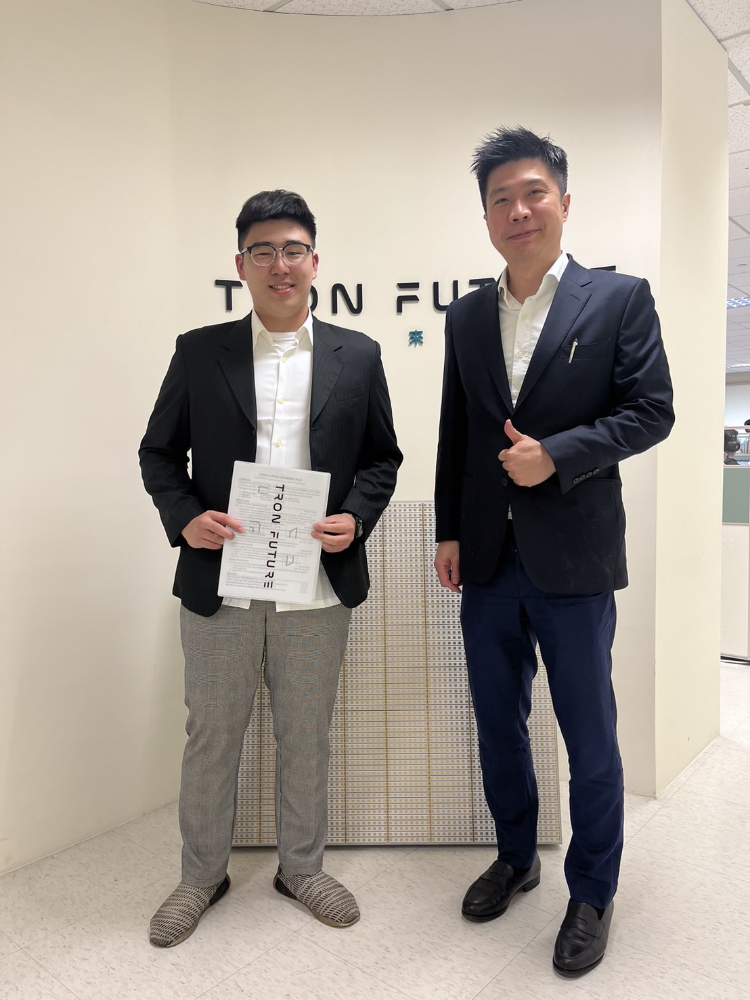
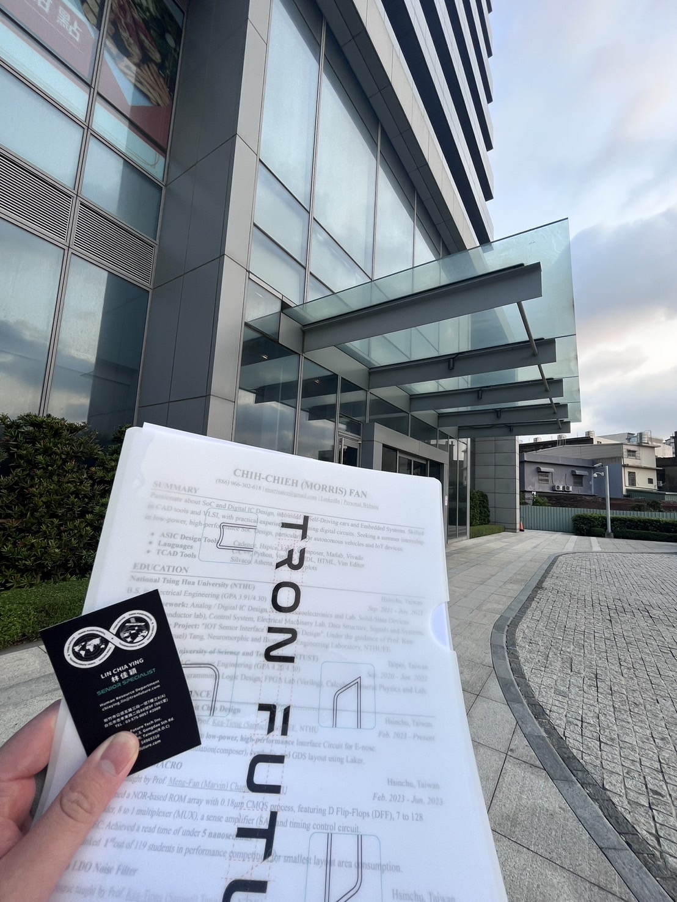

Written by Morris Fan @NTHU, Hsinchu, Apr. 07, 2023

Prof. Yu-Jiu Wang, CEO/Founder of TRON FUTURE (4Y), Cal Tech Ph.D., #140(Ph.D 20%, M.S 70%) RF research and development based
The difference between Communication and Radar is that communication is based on sending messages (one to more); On the other hand, We can use Radar to measure distance and surroundings (one-to-one). But they resemble each other.
通訊和雷達的差別，通訊：訊息傳送、雷達：自用觀察周遭，二者相近。
Limitations of Communication: Our cell phones emit signals to 基地台frequently, however, the signal can only work once the 基地台 receives it, so most of the time the energy is wasted. In order to enhance transmit efficiency. We can try to make the signal concentrate.
基地台有接收到的才是有效的能量，部分時間卻是無效的能量，因此要改善通訊系統要集中能量，提高能量傳輸效率，以及追蹤能量。
Phased Array Antenna (Include Software, Hardware, Embedded system...)
Each antenna will receive a different phase and thus have a different delay time, by adding every phase we can concentrate the energy.
We can realease it either by using Analog/Digital/
每個天線收到不同的相位，延遲時間不同，透過Phaased Array疊加相位使每個天線相位相同，使不同角度的輻射能量集中
類比數位射頻都可實現，如何準確控制相位、控制效能(動態控制)
Q: How to release dynamic adjustment of satellites physically?
R: Dr. prefer to create ulti-channel(ex. four axises). Then we can get the central by their relationships. Even it's much expensive, but much easier. 物理上如何實現，做多個通道，四個象限，用四者關係找出中心點，但是預算比較高
Q: Does
R: Of course, the chip can be thinner but the size of antenna won't change due to physical limitation
晶片微縮對系統有好處嗎？有，變薄，系統最後會取決於天線，因為天線本身有物理限制physical law，無法突破。
Fundamental research(thinking): VERY IMPORTANT！！！將研發空間和目前業界技術之間的gap縮小，比較不用擔心被他人超越。若只是一味地照做，做出來的產品頂多跟業界差不多，沒有競爭力。
Space Economy: 將東西放到軌道上的成本降低，帶來的效益也大於半導體386B左右
通訊衛星：House, cars, ships, gateway or any other things could be connected to satellite(dynamically).
Large distance high relative speed, E.g. The satellite will change during the 50mins speech.
Since it's thin enough, we can embed it on the car.
Self-driving is limited to population density. Thus, the goal is to
Intersatellite Link: High-speed communication between 2 satellites that are apart 1000kms.
衛星間間隔1000公里做高速通訊
Q: 戰爭時，幾個衛星可以通訊
R: 和軌道和角度有關，高度夠的話，30顆衛星左右可以達到全台覆蓋，若高度不夠的話，就要110顆左右，
The cost of Phased array radar: Phased array(front end ckt: satellite) 70%. Since every satellite requires a chip. Reduce #chip or optimization each step.
Cost down: Orthogonal Structure + Computed Array
Orthogonal Structure:
From Full Digital Array to Digital Sparse Array
Computed Array:
Ref. Micro LED, 共享製成
修改架構達到一樣效能 + 調整供應鏈 = 降低成本
All in all, I had the incredible opportunity today to attend a seminar on "Next Generation Satellite Communication, Radar, and Beyond" hosted by my advisor Kea-Tiong (Samuel) Tang and led by Dr. Yu-Jiu Wang, Chairman & CEO of TRON FUTURE. I was fascinated to learn about the latest advancements in Phased Array Antenna, satellite communication, radar, and more.
Dr. Wang first introduced Radio Beamforming, which enhances the transmit efficiency of communication systems and allows for better energy tracking. He emphasized the importance of conducting fundamental research to develop new and innovative approaches to technology development and staying ahead of the curve in a competitive market.
Dr. Wang also discussed the Phased Array Antenna and how it can be implemented using analog/digital chip and software/hardware/embedded systems. He also talked about the challenges of LEO satellite communication and Intersatellite Link, which is a high-speed communication system between two satellites that are apart by 1000 km.
Dr. Wang concluded by discussing the drone defense system and the cost of Phased Array Radar, highlighting the importance of fundamental research in bridging the gap between R&D and industry standards.
Attending this seminar was an enlightening experience, and I'm grateful to my advisor Kea-Tiong (Samuel) Tang for hosting it. Dr. Wang's emphasis on fundamental research was a valuable reminder that sometimes, taking a step back and focusing on the basics is the best way to move forward and create groundbreaking technologies.
Copyright © 2024, Chih-Chieh (Morris) Fan
All rights reserved. Please mention my name and source code for reference.